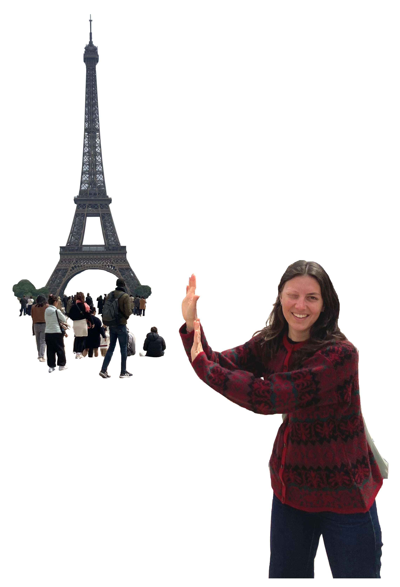
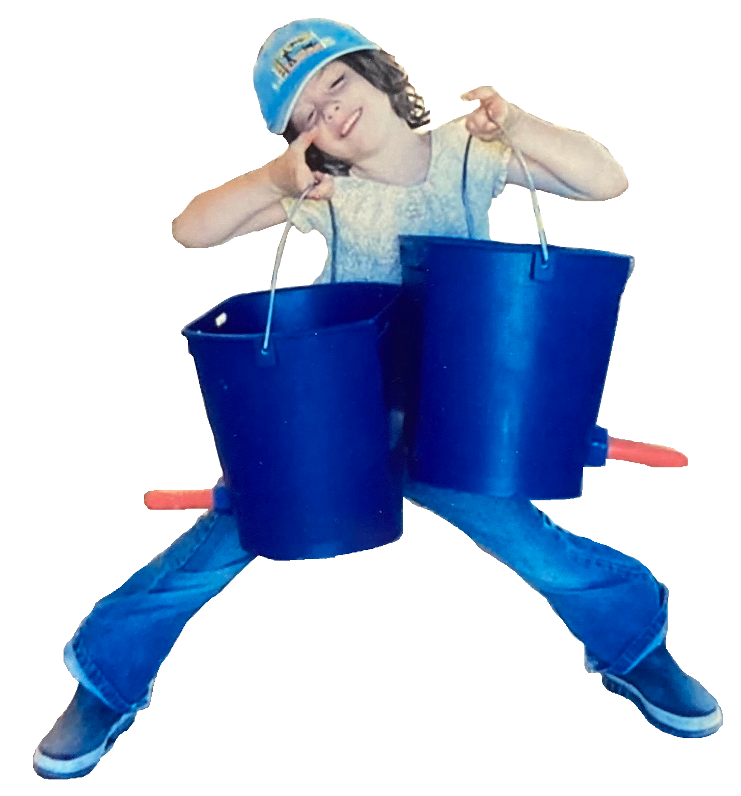
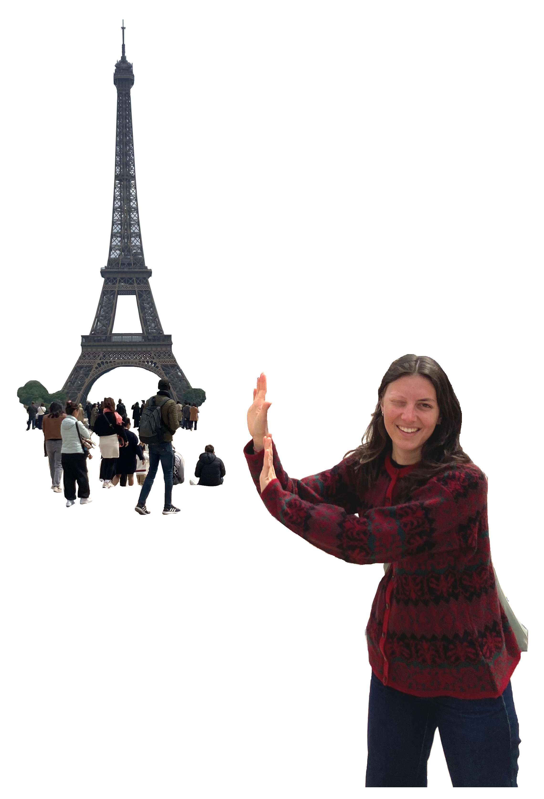
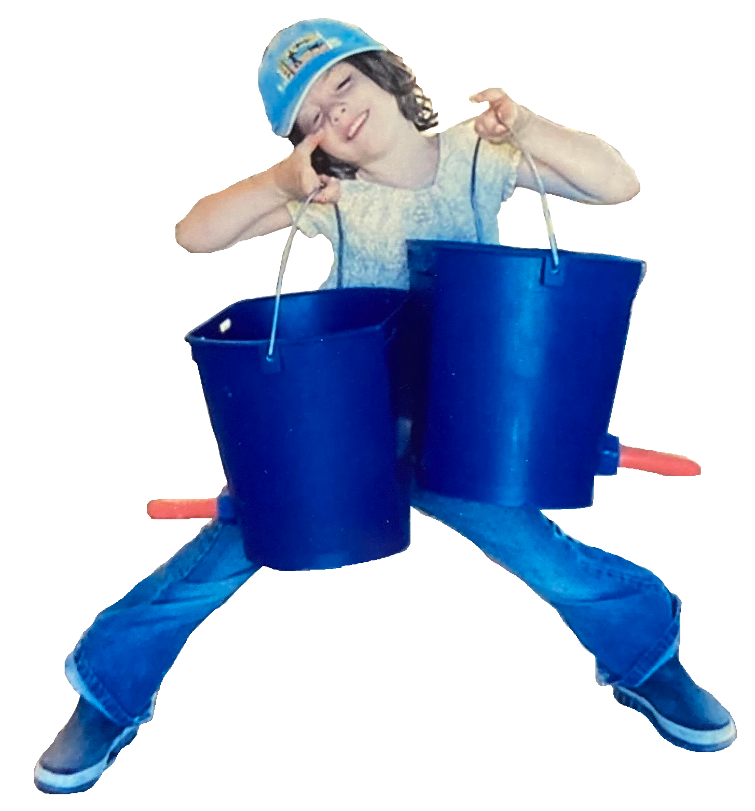

My Favorite Copenhagen Spots
28.05.2025
Here is a list of my favourite corners of the city to go to on your next bike ride through Copenhagen.
My Fruit Sticker Collection
26.05.2025
These are souvenirs from my travels and tokens of affection from friends and family who peel the stickers off their fruits and send them to me by post. Whenever I find a new one, it rarely goes straight into my yellow book. First, it might land on my forearm as I walk home from the store, as a decoration on my phone case, on the bookmark of my current book, or stuck to an ID or credit card tucked inside my wallet.
There's the sticker from the first mango I shared with friends and later grewn into a small mango tree. There are stickers from trips to Latvia, Italy, and Germany. Some were brought back by my sister from Slovakia or the Netherlands, while others came in envelopes from my grandmother in France.